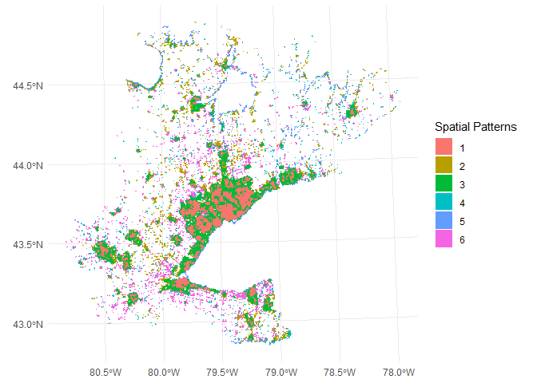
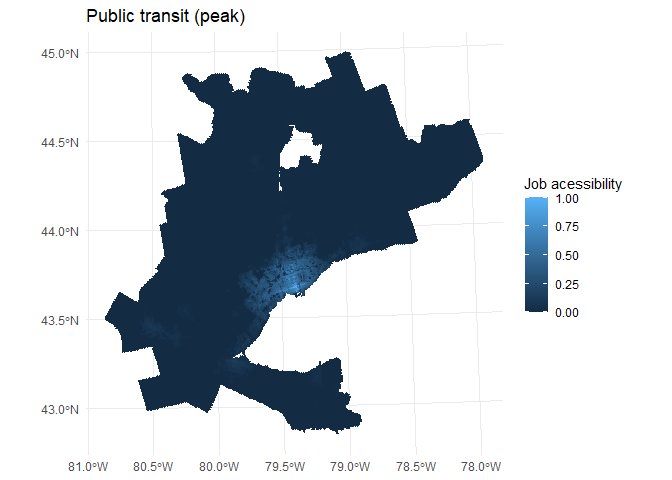
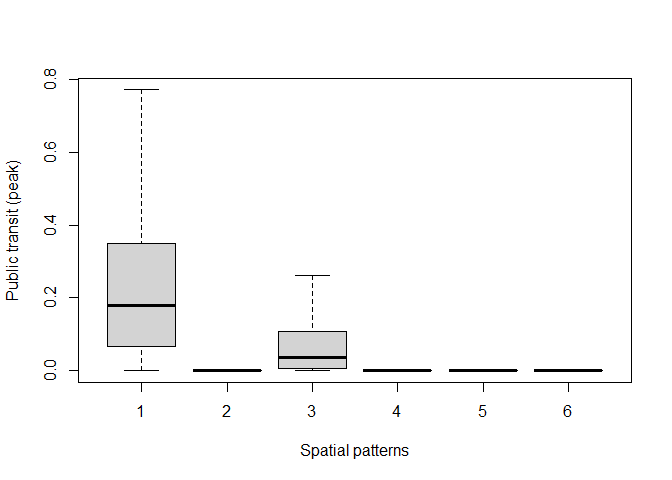

The RSAccess integrates variables extracted from remote sensing data and from a road network database with accessibility measures. The RSAccess package is a component of the GEO712 course’s final project at the School of Earth, Environment & Society of McMaster University. The main objective of the final project was to analyze and compare job accessibility levels across different spatial patterns, focusing on the Greater Golden Horseshoe area (GGH) in Ontario, Canada.
Using variables extracted from satellite images, we identified six distinct spatial patterns with variations in building density, land use, and street layout. The spatial patterns were classified using principal component analysis (PCA), followed by a clustering model. Afterwards, we compared accessibility to employment considering different modes of transportation in the identified spatial patterns. Results show that higher building density spatial patterns exhibit elevated accessibility for all transportation modes. The job accessibility is concentrated in approximately 10% of the GGH, posing challenges for spatial planners to devise a transportation system that accommodates these territorial differences. Statistical analyses confirm significant differences in job accessibility among spatial patterns.
Installation
You can install the development version of amazonULC from GitHub with:
# install.packages("devtools")
devtools::install_github("dias-bruno/RSAccess")Examples
This is a basic example showing how to plot the map of the spatial patterns identified in the Greater Golden Horseshoe area. The polygons were classified into:
High Building Density
Tree-lined Neighborhoods
Medium Building Density
Mixed Rural Use
Waterfront Housing
Farms and Rural Neighborhoods
library(RSAccess)
library(ggplot2)
data(grid_sam_classified)
ggplot() +
geom_sf(data = grid_sam_classified, aes(fill = as.factor(Cluster)), color = NA) +
labs(fill = "Spatial Patterns") +
theme_minimal()
cd .
This example shows how to plot a map of job accessibility (Public transit (peak)).
data(grid_sam)
ggplot() +
geom_sf(data = grid_sam, aes(fill = ptp_ac_emp), color = NA) +
labs(fill = "Job acessibility", title = "Public transit (peak)") +
theme_minimal()
Visualizing the difference in accessibility to work between the clusters using a boxplot, considering public transport (pico) as the mode of transport:
boxplot(ptp_ac_emp ~ Cluster, data = grid_sam_classified, xlab = "Spatial patterns", ylab = "Public transit (peak)", outline = FALSE)